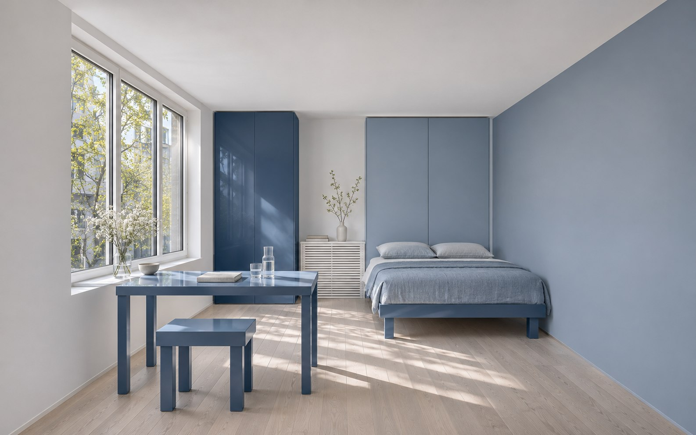
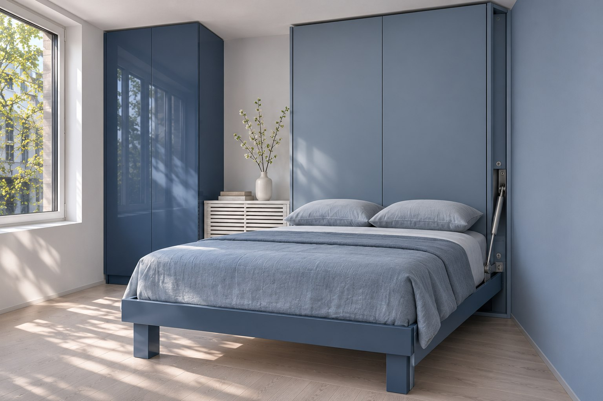
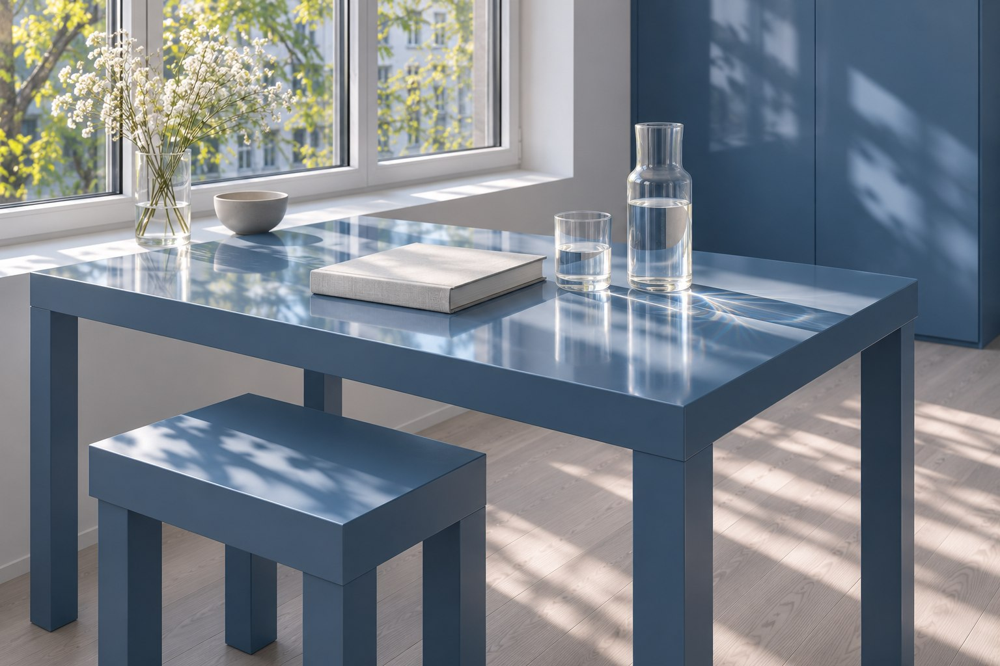

Студия под сдачу / Казань
Одна комната.
Три состояния.
Кухня, рабочее место и полноценная кровать. Жизнь меняется в течение дня — площадь остаётся той же.
Раскрыть шкафКонцепция компактного жилья

Визуализации сгенерированы ИИ для концепта; это не фотографии реализованного объекта.
Жить в малом


Стена, которая
освобождает пол
Не двигать диван каждый вечер. Кровать опускается из шкафа; стол остаётся на своей оси.
Днём: стол открыт, кровать убрана. Центральная зона свободна.
Развёртка мебельного фронта, условные размеры в мм
Каждый метр
занят делом
Окно не перекрыто мебелью. Мокрые зоны собраны у входа, а длинная стена вмещает всё постоянное хранение.
- Жилая зона
- 16 м²
- Кухня
- 5 м²
- Санузел
- 3,8 м²
- Прихожая
- 3,2 м²
Пример — концепт для портфолио. Все площади и размеры условные; необходим обмер.
Спокойная оболочка.
Заменяемые детали.
Моющаяся поверхность стен.
Фасады кухни, матовое покрытие.
Тактильная отделка стола.
Сменные планки в зоне входа.
Подготовлено
к смене жильца
Чем меньше скрытых механизмов и уникальных деталей, тем проще обслуживать небольшую квартиру.
- Съёмный чехол и отдельный матрас.
- Доступ к фильтрам и сифону без разборки кухни.
- Фасады стандартной ширины, запас краски для ремонта.
- Крепление кровати проверяет конструктор после обследования стены.
Состав дизайн-проекта
Пример — концепт для портфолио. Расчёт проектирования для 28 м², без ремонта и мебели.
| Раздел | ₽/м² | Стоимость |
|---|---|---|
| Планировка | 700 | 19 600 ₽ |
| Материалы и мебель | 900 | 25 200 ₽ |
| Чертежи | 1 400 | 39 200 ₽ |
| Спецификации | 500 | 14 000 ₽ |
| Итого | 3 500 | 98 000 ₽ |
Визуализация — отдельная услуга от 30 000 ₽. Для расчёта ремонта нужны обмеры, инженерные условия и выбранные позиции.